검증일: 2026-07-11T14:38:28+00:00 · 환경: web=gstack live http://localhost:8812 (내부 ~/.cache/ms-playwright chromium); server=Jest 459 tests; android/ios=SKIPPED(적용 불가) · commit a6c3a325 (dirty) · branch feat/flowforge-feedback-changes
PASS 9 · FAIL 0 · 검증 안 함 0 · SKIPPED 0
cf46759) 후 재검증으로 PASS 승격됐다
(e5-* 캡처: e5-ia-badge-on.png·e5-ia-detail-panel.png·e5-ia-open-views.png).
배지 실증은 verify fixture(specs/planning-features-view) 기반이며, 라이브 실데이터에서는 배지가 0개다 —
활성 change의 specs/dir capability가 features.md capability와 교집합 0이고, 대응되던 완료 change는 이미 archive됐기 때문이다.
따라서 실데이터로 배지가 실제로 뜨는 경로(매핑 기준 전환)는 후속 change flowforge-mapping-basis-shift에서 별도로 실증한다.
| 게이트 | 상태 | 명령 | 근거(basis) |
|---|---|---|---|
| BUILD | ✓ PASS | npm run build | shared·server·web tsc + vite build 성공(220 모듈, dist/assets/index-D5JzB1ts.js 435KB) |
| TYPECHECK | ✓ PASS | npx tsc --noEmit | shared/server/web 3개 전부 exit 0 |
| LINT | ✓ PASS | npm run lint | lint:linkage "기획 capability 11개, openspec 키 45개 대조 ✅ 연동 위반 없음" |
| TEST | ✓ PASS | npm run test --workspace server | Jest 39 스위트 459 tests passed(capabilityIndex.test.ts 파생 4건 포함), 회귀 0 |
| UI | ✓ PASS | gstack (내부 chromium) http://localhost:8812 | 실픽셀 13장 캡처(verify-shots/) |
| Requirement | Scenario | Layer | 검증 수단 | 탐지 근거(basis) | 결과 | 증거 |
|---|---|---|---|---|---|---|
| 요구사항 노드에 연관 change만 in-place로 매핑한다 | Scenario: capability에 연관 change가 있는 요구사항 노드 | web | gstack — planning-features-view 요구사항 노드에 change 배지 실픽셀 관찰 | planning-features-view 요구사항 노드에 보라색 'change 1' 배지 실픽셀. 배지=FeatureNode.tsx span(읽기전용). 라이브 API linkedChanges=['flowforge-change-node-mapping'] 실측. | ✓ PASS | 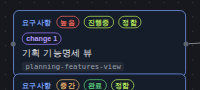 |
| 요구사항 노드에 연관 change만 in-place로 매핑한다 | Scenario: 연관 change가 없는 요구사항 노드 | web | gstack — linkedChanges 0인 요구사항 노드에 배지 미표시 관찰 | 한 화면에 3요구사항 세로 나열 — 기획 PRD 뷰(배지 없음)/기획 기능명세 뷰(change 1)/planning-only 인식(배지 없음). linkedChanges 0=안전한 빈 처리. | ✓ PASS | 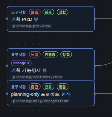 |
| 요구사항 노드에 연관 change만 in-place로 매핑한다 | Scenario: 전역 change 목록은 더 이상 나열되지 않는다 | web | gstack — skeleton 뷰에서 전역 change 나열 블록 DOM 부재 관찰 | skeleton 뷰에 .dash-changes-section DOM 0 매치(C.3 제거 확인). | ✓ PASS | 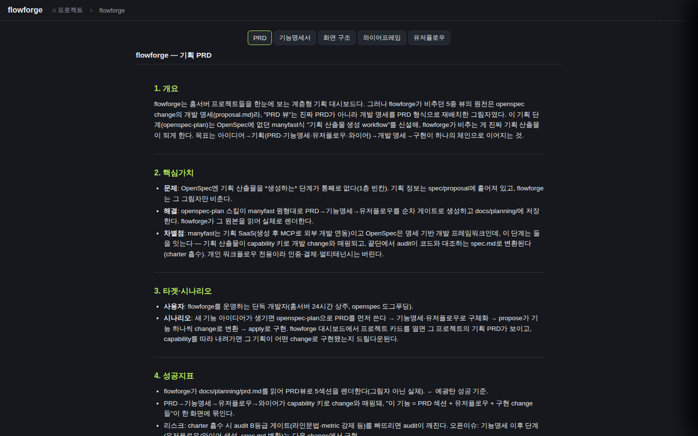 |
| 하위 노드는 상위 요구사항 capability를 상속해 연관 change를 표시한다 | Scenario: 기능 노드(3단)가 상위 capability를 상속한다 | web | gstack — 기능명세서 트리에서 상세기능 노드의 상속 배지·클리핑 관찰(본체 직접 관찰 grounding) | 요구사항 기획 기능명세 뷰→기능 기능명세서 트리 렌더→상세기능 2개 모두 change 1 배지. DOM .feature-tree-change=4개, 부모 오버플로우 0(클리핑 없음). 본체 직접 관찰 grounding. | ✓ PASS | 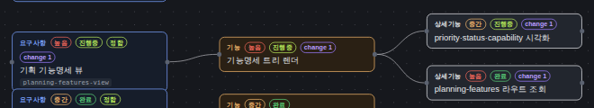 |
| 하위 노드는 상위 요구사항 capability를 상속해 연관 change를 표시한다 | Scenario: 상세기능 노드가 요구사항 capability와 연결 화면 change를 합집합으로 표시한다 | web | gstack — 상세기능 노드의 상속 배지 관찰(화면 합집합 로직은 D.2 코드정독) | 상세기능 노드에 상위 capability change 상속 배지 확인. 화면 합집합은 fixture가 화면 미연결이라 상속분만 관찰(합집합 로직은 D.2 코드정독 PASS). | ✓ PASS | 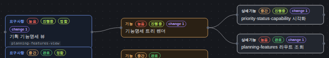 |
| 화면 노드는 상세기능↔화면 링크를 역경유해 연관 change를 매핑한다 | Scenario: 화면에 연결된 상세기능의 capability change가 화면에 매핑된다 | web | gstack — IA 화면 노드의 역경유 change 배지·상세패널 진입 실렌더 관찰(본체 직접 관찰 grounding) | IANode.tsx에 change 배지 렌더 + IADetailPanel.tsx에 🔗 연관 change 섹션(onOpenChange) + App.tsx:1185 배선 추가(커밋 cf46759). fixture(planning-features-view, IA 화면 features·skeleton과 연결)로 재검증 — IA 화면 노드 2개(기능명세 화면·기획 뷰)에 'change 1' 배지 실렌더(e5-ia-badge-on.png), 클릭→상세패널 🔗 연관 change(1)(e5-ia-detail-panel.png)→5종 뷰(PRD 탭)+딥링크 URL 진입(e5-ia-open-views.png)+패널 닫힘 실증. 본체 직접 관찰. | ✓ PASS | 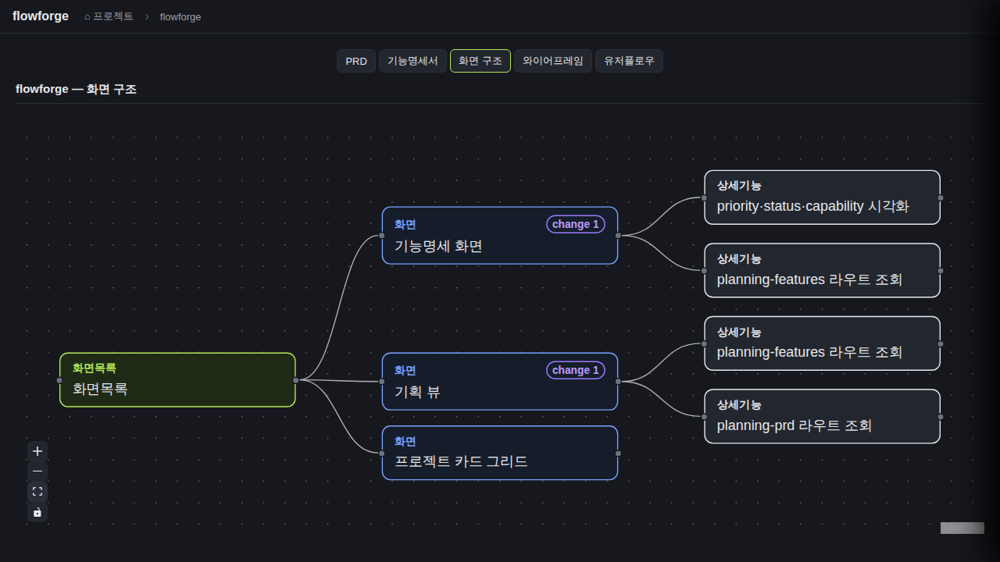 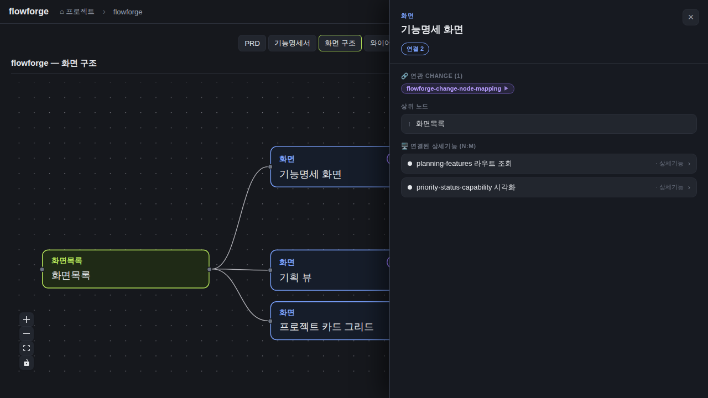 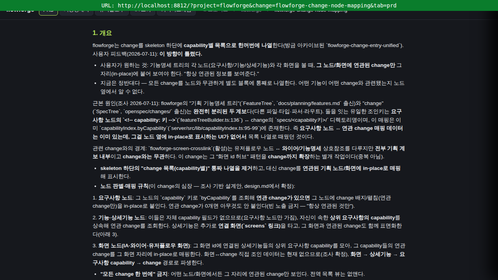 |
| 화면 노드는 상세기능↔화면 링크를 역경유해 연관 change를 매핑한다 | Scenario: 연결 상세기능이 없거나 연관 change가 없는 화면 | web | gstack — IA 화면 노드에 배지 0개·콘솔 에러 0 관찰 | IA 화면 배지 0개, 안전한 빈 처리, 콘솔 에러 0. | ✓ PASS | 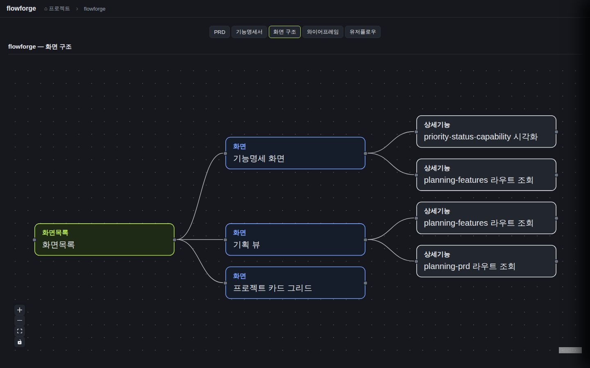 |
| 노드에 매핑된 change에서 5종 뷰로 진입한다 | Scenario: 노드의 change 항목 클릭 시 5종 뷰 진입 | web | gstack — 배지 노드 클릭→상세패널 연관 change 항목 클릭→5종 뷰·URL 관찰(본체 직접 관찰 grounding) | 배지 노드 클릭→FeatureDetailPanel '🔗 연관 CHANGE(1)'→항목 클릭→5종 뷰(PRD 탭 활성)+URL '?project=flowforge&change=flowforge-change-node-mapping&tab=prd' 정확 일치. 본체 직접 관찰 grounding. | ✓ PASS | 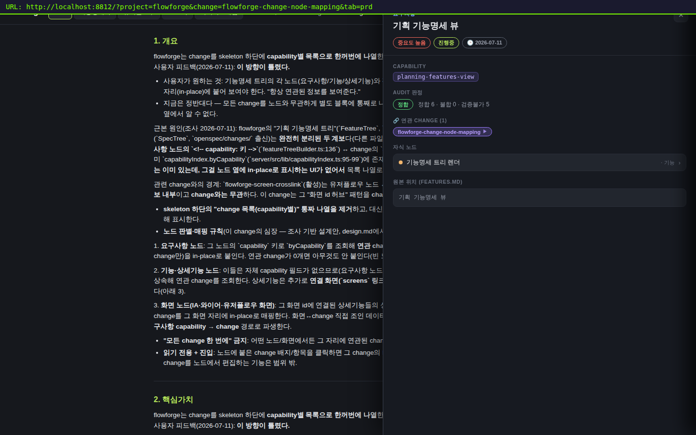 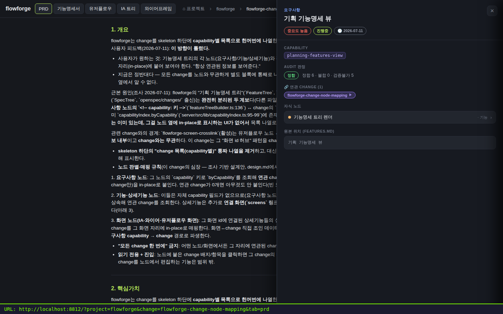 |
| 노드에 매핑된 change에서 5종 뷰로 진입한다 | Scenario: change를 노드에서 편집하지 않는다 | web | gstack — 상세패널 연관 change 섹션에 편집/추가/삭제 UI 부재 관찰 | 상세패널 연관 change 섹션은 button onClick=진입만, 편집/추가/삭제 UI 없음. FeatureNode 배지=span(onClick 없음). | ✓ PASS | 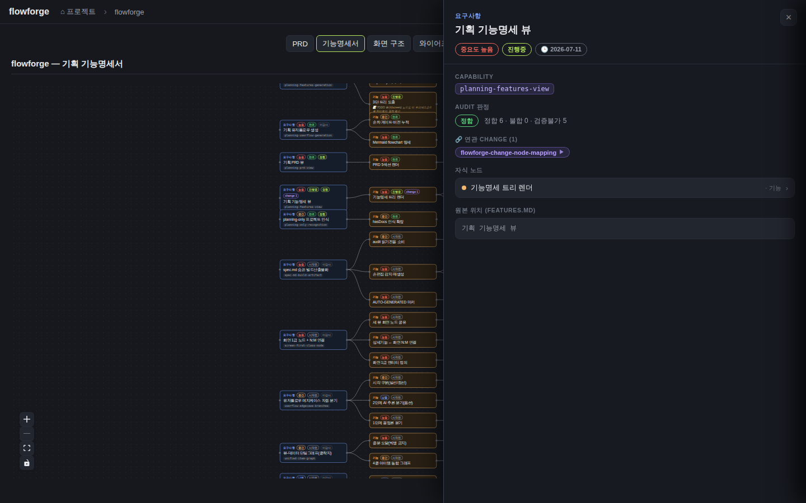 |
D그룹 검증: capability 없음·change 0·null 트리·중복 화면 링크·화면 미연결 상세기능 전부 크래시 없이 빈 처리(D.2 5/5 PASS, server Jest 14 PASS). 순수 파생 함수 — 옵셔널 체이닝·nullish 가드·early return으로 크래시 부재.
| Requirement | null | 빈값 | 잘못된타입 | 경계값 | 에러경로 | 동시성 | 대량 | 특수문자 | 판정 |
|---|---|---|---|---|---|---|---|---|---|
| 요구사항 노드에 연관 change만 in-place로 매핑한다 | ✓ | ✓ | N/A | ✓ | N/A | N/A | N/A | N/A | ✓ 충분 |
| 하위 노드는 상위 요구사항 capability를 상속해 연관 change를 표시한다 | ✓ | ✓ | N/A | ✓ | N/A | N/A | N/A | N/A | ✓ 충분 |
| 화면 노드는 상세기능↔화면 링크를 역경유해 연관 change를 매핑한다 | ✓ | ✓ | N/A | ✓ | ✓ | N/A | N/A | N/A | ✓ 충분 |
| 노드에 매핑된 change에서 5종 뷰로 진입한다 | ✓ | ✓ | N/A | ✓ | ✓ | N/A | N/A | ✓ | ✓ 충분 |
✓=covered · N/A=해당없음(사유 hover) · ✗=missing. happy-path만이면 검증 불충분 → 최종 FAIL 차단.
| Layer | 상태 | ran | passed | failed | 근거/사유 |
|---|---|---|---|---|---|
| web | ✓ PASS | 9 | 9 | 0 | gstack live http://localhost:8812 (내부 ~/.cache/ms-playwright chromium) — 9 시나리오 전부 PASS(실픽셀 13장 + IA 역경유 재검증 e5 4장). IA 화면 역경유 표시 경로는 렌더 구현(cf46759) 후 재검증으로 PASS 승격. 단 UI 배지는 verify fixture(specs/planning-features-view)로 실증, 실데이터 배지 0. |
| server | ✓ PASS | 459 | 459 | 0 | Jest 39 스위트 459 tests passed(capabilityIndex.test.ts 노드↔change 파생 4건 + D그룹 엣지 14건 포함), 회귀 0. 노드↔change 파생 순수 함수 유닛 검증. |
| android | – SKIPPED | 0 | 0 | 0 | 웹 SPA 전용 change — android 레이어 없음 |
| ios | – SKIPPED | 0 | 0 | 0 | 웹 SPA 전용 change — ios 레이어 없음 |
| 대상 | 증거 |
|---|---|
| 유저플로우 화면 불변 | 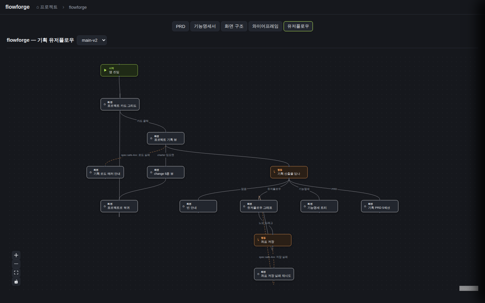 |
| 와이어프레임 화면 불변 | 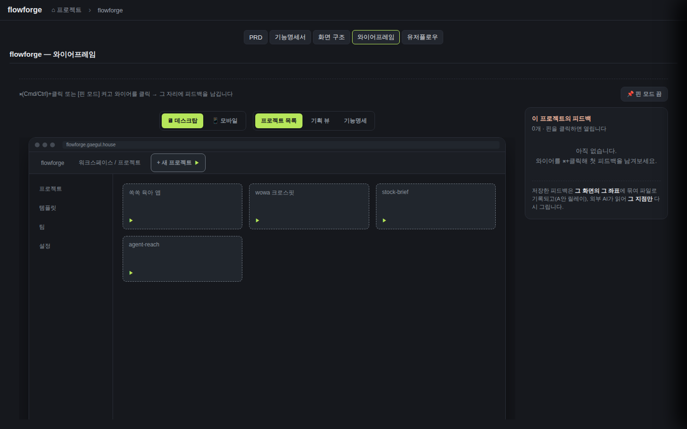 |
| 그래프 탭 불변 | 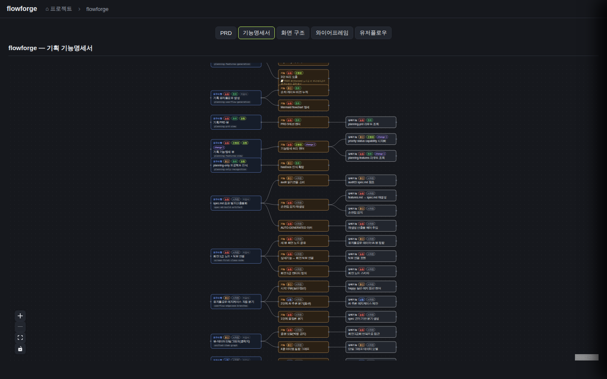 |
| change 기능명세 탭 | 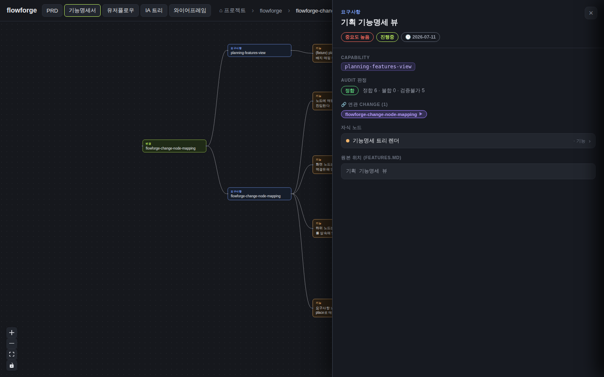 |
✓ 통과 열림 (전 시나리오 PASS 9/9 — IA 화면 역경유 렌더 구현·재검증 완료, review 치명 1 해소)
단 UI 배지 실증은 verify fixture(planning-features-view) 기반(실데이터 배지 0), 실데이터 배지 0의 매핑 기준 전환은 후속 change flowforge-mapping-basis-shift로 분리. archiveGate.open = true (PASS일 때만 true). verify.json이 이 값을 archive 게이트에 전달.
{kind=link}
{kind=link}
{kind=link}
{kind=link}
{kind=link}
{kind=link}
{kind=link}
{kind=link}
{kind=link}
{kind=link}
{kind=link}
{kind=link}
{kind=link}
{kind=link}
{kind=link}
{kind=link}